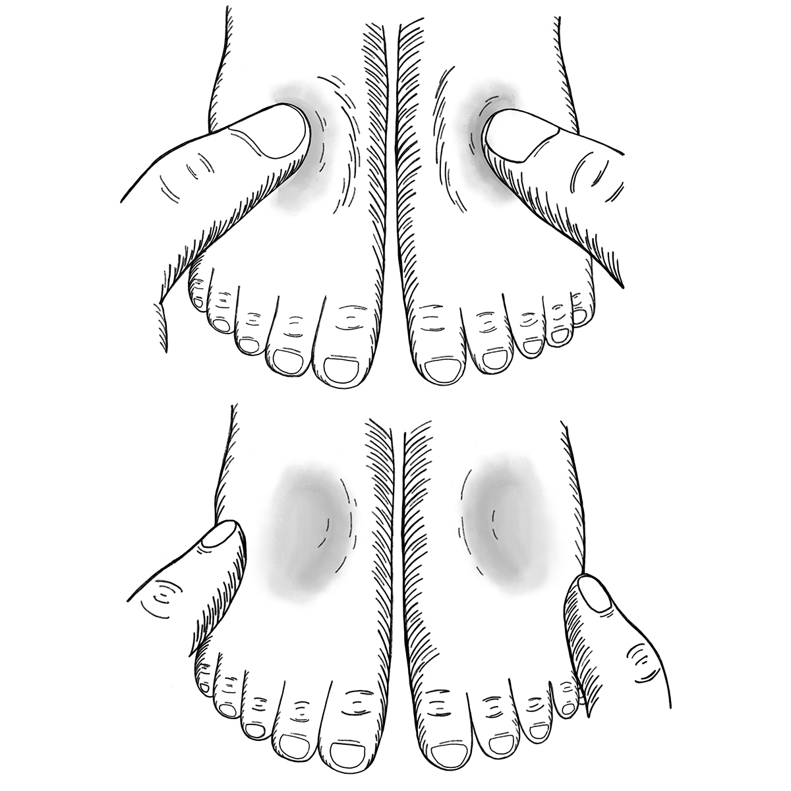

El edema ocurre cuando demasiada agua se acumula y permanece en los tejidos del cuerpo (retención de agua). El edema causa hinchazón e inflamación.
¿Por qué es importante medir el edema?
Hinchazón o edema en ambos pies (edema bilateral) es un signo de malnutrición aguda severa (MAS). Esta forma de malnutrición a veces se llama Kwashiorkor.
Lo que necesita saber
El edema comienza en los pies, pero puede extenderse a todo el cuerpo. Cuanto más alto avance la hinchazón por el cuerpo (por ejemplo, hacia los brazos, las manos o la cara), más grave es.
Cuanto más rápido se identifique el edema, más fácil es de tratar.
Todos los niños con edema bilateral necesitan atención terapéutica urgente.
Averigüe la ubicación de los servicios más cercanos que traten la malnutrición aguda severa (MAS) y cómo los niños pueden ser referidos a ellos.
¿Cómo examinar para edema?
Retire los zapatos y los calcetines del niño. Presione ambos pulgares en la parte superior de cada pie durante tres segundos. Mantenga una presión firme y constante.
Retire sus pulgares. Siunhoyoohundimientopermaneceenlapielde ambos pies después de 3 segundos, el niño puede tener edema.

Cualquier niño que tenga edema debe ser referido a un establecimiento de salud tan pronto como sea posible.
Señales de que un niño tiene edema (Kwashiorkor)
El edema con fóvea se presenta en los pies y, en casos graves, a veces en las piernas y la cara.
El niño a menudo parece triste o enfermo y no se mueve mucho.
El niño está cansado y ha perdido el apetito.
La piel suele estar agrietada y adolorida.
El cabello es seco y delgado, se rompe fácilmente y es de color rojizo.
El niño llora mucho.
Lo que puede hacer
Explique a los líderes de la comunidad y a los padres que la hinchazón de los pies es un signo grave de malnutrición y que puede tratarse.
Explique la importancia de tratar la malnutrición.
Encuentre y refiera a los niños con edema nutricional a la instalación de salud o centro de nutrición más cercano tan pronto como sea posible.
Mensajes comunitarios
Encuentre la palabra local para un niño con edema y úsela para ayudar a encontrar casos.
Informe a la comunidad que el edema es un problema nutricional y que se puede tratar.
Enfatice la importancia de obtener tratamiento y explique las diferentes causas de la malnutrición.
Enfatice que las familias deben participar en el tratamiento, la prevención y la identificación.
Herramientas para mensajes comunitarios
Vea los siguientes mensajes de la comunidad para apoyar medición del edema (retención de agua) en niños: